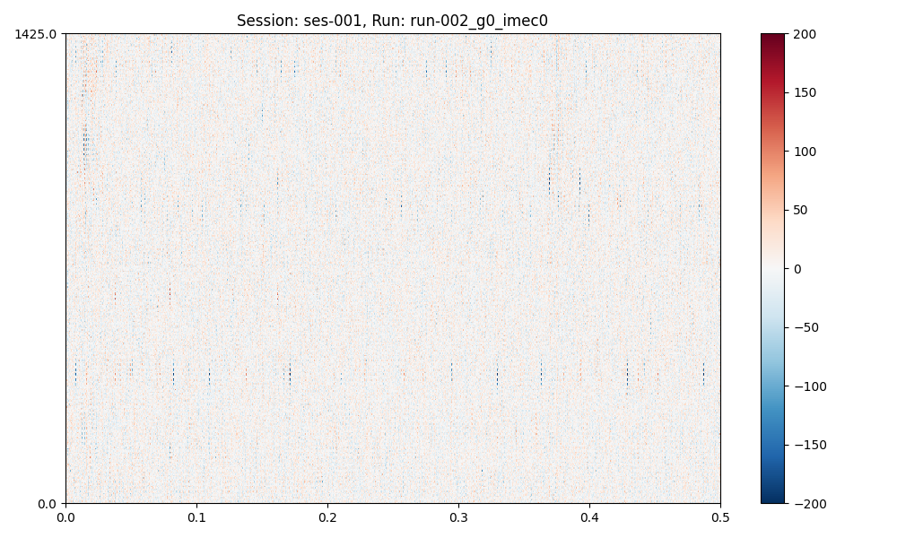

Note
Go to the end to download the full example code. or to run this example in your browser via Binder
Preprocessing Sessions#
Note
This is a long-form tutorial on session preprocessing. See here for a quick how-to.
In this how-to we will use the spikewrap.Session interface to manage
the preprocessing and visualisation of a dataset.
- We will cover:
Loading raw data for a session.
Prototyping / visualising preprocessing steps.
Saving preprocessed data.
Attention
spikewrap’s features are currently limited. See the Roadmap
for planned features.
Loading Data#
To load a session data, we must instantiate spikewrap.Session object,
with the location of the data.
The examples in this tutorial examples use a project in NeuroBlueprint format, (however, some custom formats are supported, see Supported Formats for details).
Let’s say we have a dataset (available at spikewrap.get_example_data_path()) like:
└── rawdata/
└── sub-001/
└── ses-001/
└── ephys/
├── run-001_g0_imec0/
│ ├── run-001_g0_t0.imec0.ap.bin
│ └── run-001_g0_t0.imec0.ap.meta
└── run-002_g0_imec0/
├── run-002_g0_t0.imec0.ap.bin
└── run-002_g0_t0.imec0.ap.meta
└── rawdata/
└── sub-001/
└── ses-001/
└── ephys/
└── Recording Node 304/
└── experiment1/
├── recording1/
│ └── ...
└── recording2/
└── ...
This dataset is installed with spikewrap so you can run this tutorial locally.
First, we import and instantiate the spikewrap.Session object with the:
subject_path:Full filepath to the subject folder in which the session is located.
session name:Name of the session folder.
file_format:"spikeglx"or"openephys", the acquisition software used.run_names:(optional) Default “
all"or a list of run folder names to process.
import spikewrap as sw
session = sw.Session(
subject_path=sw.get_example_data_path() / "rawdata" / "sub-001",
session_name="ses-001",
file_format="spikeglx", # or "openephys"
run_names="all"
)
session.load_raw_data()
session.preprocess(configs="neuropixels+kilosort2_5")
Loading runs from session path: /home/runner/work/spikewrap/spikewrap/spikewrap/examples/example_tiny_data/spikeglx/rawdata/sub-001
Loading run: run-001_g0_imec0
Loading data from path: /home/runner/work/spikewrap/spikewrap/spikewrap/examples/example_tiny_data/spikeglx/rawdata/sub-001/ses-001/ephys/run-001_g0_imec0
Loading run: run-002_g0_imec0
Loading data from path: /home/runner/work/spikewrap/spikewrap/spikewrap/examples/example_tiny_data/spikeglx/rawdata/sub-001/ses-001/ephys/run-002_g0_imec0
The preprocessing options are: {
"1": [
"bandpass_filter",
{
"freq_max": 6000,
"freq_min": 300
}
],
"2": [
"common_reference",
{
"operator": "median",
"reference": "global"
}
]
}
Loading data from path: /home/runner/work/spikewrap/spikewrap/spikewrap/examples/example_tiny_data/spikeglx/rawdata/sub-001/ses-001/ephys/run-001_g0_imec0
Loading data from path: /home/runner/work/spikewrap/spikewrap/spikewrap/examples/example_tiny_data/spikeglx/rawdata/sub-001/ses-001/ephys/run-002_g0_imec0
Due to the magic of SpikeInterface, all data loading is ‘lazy’ and will be very fast. Note that nothing is written to disk at this stage.
We can inspect the detected run names with:
print(session.get_run_names())
['run-001_g0_imec0', 'run-002_g0_imec0']
Preprocessing Options#
Defining preprocessing steps can be done in two ways, with a pre-set configuration file or a python dictionar (see Managing Configs for more details).
Briefly, a configuration file related to your data can be used to preprocess by name, as we did above.
We can print the configs used with:
sw.show_configs("neuropixels+kilosort2_5")
The preprocessing options are: {
"1": [
"bandpass_filter",
{
"freq_max": 6000,
"freq_min": 300
}
],
"2": [
"common_reference",
{
"operator": "median",
"reference": "global"
}
]
}
The sorting options are: {
"kilosort2_5": {
"car": false,
"freq_min": 150
}
}
Otherwise, we can define a dictionary with the steps to pass to spikewrap.Session.preprocess().
All preprocess steps are defined with their underlying SpikeInterface function name.
configs = {
"preprocessing": {
"1": ["bandpass_filter", {"freq_min": 300, "freq_max": 6000}],
"2": ["common_reference", {"operator": "median"}],
}
}
spikewrap.Session.preprocess() will also accept a dictionary with the top-level omitted
pp_steps = {
"1": ["bandpass_filter", {"freq_min": 300, "freq_max": 6000}],
"2": ["common_reference", {"operator": "median"}],
}
Concatenation Arguments#
For multi-run sessions or multi-shank probes, we can set:
per_shank:If
True, split the recordings into separate shanks before preprocessing.concat runs:If
True, concatenate all runs together before processing.
session.preprocess(
configs=configs,
per_shank=True,
concat_runs=True,
)
The preprocessing options are: {
"1": [
"bandpass_filter",
{
"freq_max": 6000,
"freq_min": 300
}
],
"2": [
"common_reference",
{
"operator": "median"
}
]
}
Loading data from path: /home/runner/work/spikewrap/spikewrap/spikewrap/examples/example_tiny_data/spikeglx/rawdata/sub-001/ses-001/ephys/run-001_g0_imec0
Loading data from path: /home/runner/work/spikewrap/spikewrap/spikewrap/examples/example_tiny_data/spikeglx/rawdata/sub-001/ses-001/ephys/run-002_g0_imec0
Concatenating runs in the following order:['run-001_g0_imec0', 'run-002_g0_imec0']
Split run: concat_run by shank. There are 2 shanks.
Visualising Preprocessing#
spikewrap can be used to iteratively prototype preprocessing steps by adjusting
configurations and arguments, then re-plotting. This can be performed in a
Jupyter notebook if desired.
plots = session.plot_preprocessed(
show=True,
time_range=(0, 0.5),
show_channel_ids=False, # also, "mode"="map" or "line"
)
plots (a dict of matplotlib figures) contains the figures for (optional) further editing.
print(plots)
{'concat_run': <Figure size 2000x600 with 4 Axes>}
Now, let’s update a preprocessing step and plot again:
import copy
pp_attempt_2 = copy.deepcopy(configs)
# This is currently quite verbose. It is the second preprocessing
# step, second element of the list ["function_name", {function_kwargs...}]
# (see processing dictionary defined above)
pp_attempt_2["preprocessing"]["2"][1]["operator"] = "average"
session.preprocess(
configs=pp_attempt_2,
per_shank=False,
concat_runs=False,
)
plots = session.plot_preprocessed(
time_range=(0, 0.5), show_channel_ids=False, show=True
)
- 
The preprocessing options are: {
"1": [
"bandpass_filter",
{
"freq_max": 6000,
"freq_min": 300
}
],
"2": [
"common_reference",
{
"operator": "average"
}
]
}
Loading data from path: /home/runner/work/spikewrap/spikewrap/spikewrap/examples/example_tiny_data/spikeglx/rawdata/sub-001/ses-001/ephys/run-001_g0_imec0
Loading data from path: /home/runner/work/spikewrap/spikewrap/spikewrap/examples/example_tiny_data/spikeglx/rawdata/sub-001/ses-001/ephys/run-002_g0_imec0
Save Preprocessing#
When you are ready to save the preprocessed recording with your chosen settings, you can run:
session.save_preprocessed(overwrite=True, n_jobs=6)
Saving data for: run-001_g0_imec0...
`overwrite=True`, so deleting all files and folders (except for slurm_logs) at the path:
/home/runner/work/spikewrap/spikewrap/spikewrap/examples/example_tiny_data/spikeglx/derivatives/sub-001/ses-001/ephys/run-001_g0_imec0
Saving sync channel for: run-001_g0_imec0...
write_binary_recording
n_jobs=4 - samples_per_chunk=60,000 - chunk_memory=43.95 MiB - total_memory=175.78 MiB - chunk_duration=2.00s
write_binary_recording: 0%| | 0/1 [00:00<?, ?it/s]
write_binary_recording: 100%|██████████| 1/1 [00:00<00:00, 3.43it/s]
write_binary_recording: 100%|██████████| 1/1 [00:00<00:00, 3.43it/s]
Saving data for: run-002_g0_imec0...
`overwrite=True`, so deleting all files and folders (except for slurm_logs) at the path:
/home/runner/work/spikewrap/spikewrap/spikewrap/examples/example_tiny_data/spikeglx/derivatives/sub-001/ses-001/ephys/run-002_g0_imec0
Saving sync channel for: run-002_g0_imec0...
write_binary_recording
n_jobs=4 - samples_per_chunk=60,000 - chunk_memory=43.95 MiB - total_memory=175.78 MiB - chunk_duration=2.00s
write_binary_recording: 0%| | 0/1 [00:00<?, ?it/s]
write_binary_recording: 100%|██████████| 1/1 [00:00<00:00, 3.52it/s]
write_binary_recording: 100%|██████████| 1/1 [00:00<00:00, 3.51it/s]
Attention
On some systems, you may encounter strange behaviour when running multiple
jobs (n_jobs > 1), such as non-parallelised steps running more than once.
You may need to wrap your script in a if __name__ == "__main__" block,
(if you encounter this problem, you will see an error to this effect).
if __name__ == "__main__":
import spikewrap as sw
...
Using SLURM#
The spikewrap.Session.save_preprocessed step is where all data
is preprocessed and written to disk. Therefore, if using a HPC (high-performance computing) system,
it may be convenient to run it through the job-scheduler SLURM.
The function takes an argument slurm=True which can be used to save the preprocessing
in a SLURM sbatch job.
See the SLURM tutorial for more information.
Attention
SLURM jobs are requested at the run level. For example, if a
session has 2 runs (which are not concatenated),
spikewrap.Session.save_preprocessed() will request two nodes.
Output data organisation#
See the
Total running time of the script: (0 minutes 3.540 seconds)